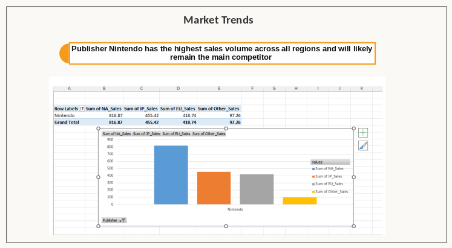
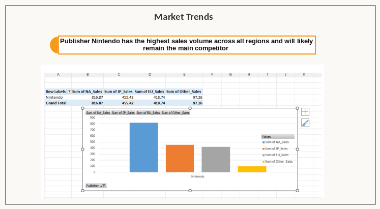

Rockbuster is Stealth LLC is facing stiff competitions from streaming services. The project aims to provide data-driven insights to help Rockbuster Stealth LLC stay competitive in the evolving movie rental industry.
GameCo’s Executives assumed that sales for the various geographic regions have stayed the same over time. GameCo Needs to understand which types of video games are most popular, identify main competitors, and analyze sales trends across different regions to make informed decisions on game development and marketing strategies.


 


Prioritize developing and marketing Shooter and Action games to capture a significant share of the popular genres. Consider creating Sports and Platform games to appeal to a broad audience in North America and Europe.
In North America, focus on maintaining dominance in Shooter and Action genres. Invest in innovative marketing strategies to counteract the declining trend. In Europe, tailor marketing campaigns to highlight popular genres like Shooter, Action, and Sports games.In Japan, develop and market Role-Playing games to cater to local preferences. Collaborate with local influencers to boost market presence.
Analyze strategies of top competitors like Nintendo, EA, and Activision Blizzard.